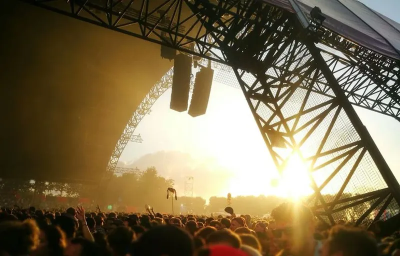
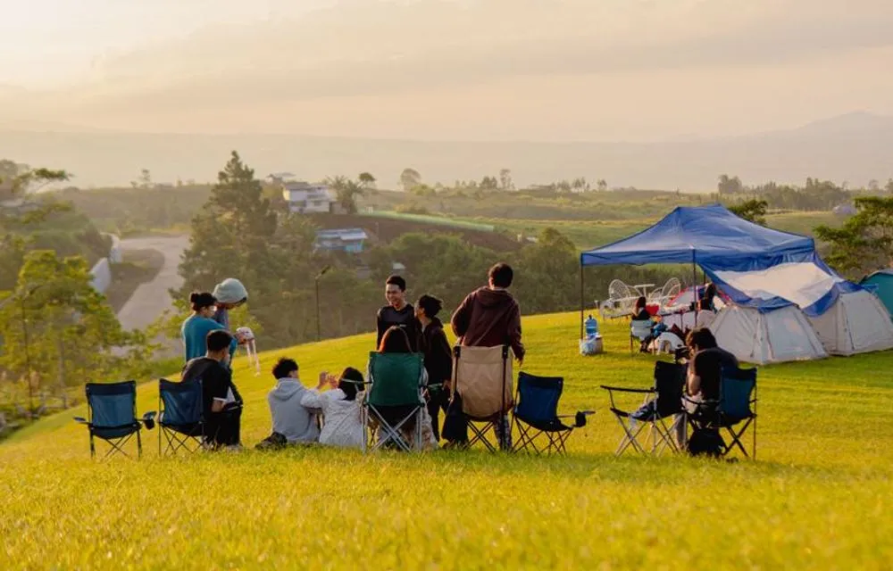
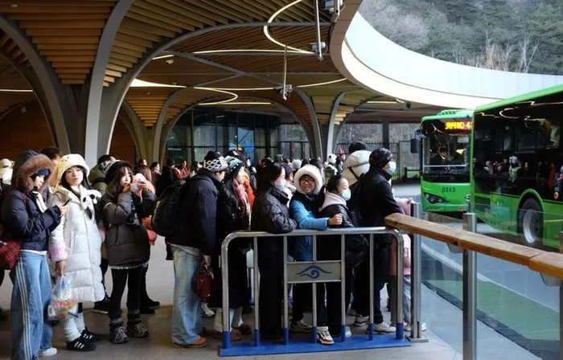

Three days.
One sunset.
16 to 18 July 2027 in the Cotswolds: twelve acts on three stages in a valley that faces west. The whole weekend is on the dial. Pick a day, press an act, build your plan.
Press an act
The whole weekend, on one dial
Outer ring Sunset, middle Forest, inner Dome
- Sunset
- Forest
- Dome
Three stages

Sunset
The main stage, facing west over the valley. Doors open at four and the sun sets behind the stage.
Forest
A lantern-lit clearing in the beech wood for folk, indie and big singalongs.
Dome
A 3,000-capacity dome with lasers, bass and no curfew till 2am.
Timed to the sun
The Sunset stage faces west, so each evening headliner is timed to the real sunset over the valley. These are the light times for the field.
| Day | Sunrise | Sunset |
|---|---|---|
| Friday 16 July | 05:06 | 21:20 |
| Saturday 17 July | 05:07 | 21:19 |
| Sunday 18 July | 05:09 | 21:18 |
Tickets
Choose ticketsDay pass
£79
One day, any stage.
Weekend
£189
All three days, plus a festival tote.
VIP weekend
£349
Fast-track entry, a private bar and the viewing deck.


See you in the valley.
Camping, shuttle buses from Kemble and Cheltenham, and a family field are all on the getting here page.